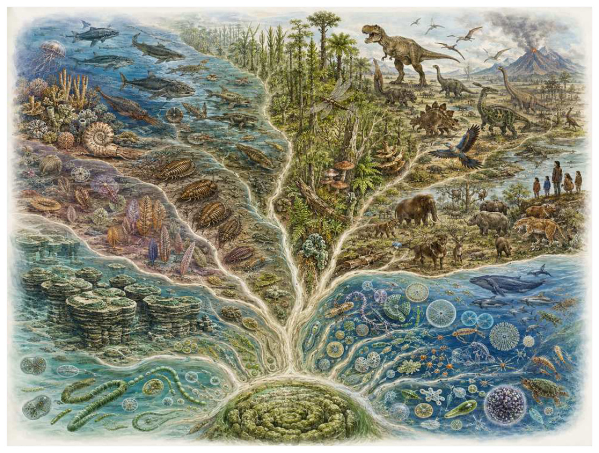

第20篇 · 重新理解四十亿年生命史 · 第 60 章
重新理解四十亿年：生命树没有顶端
本篇主题:重新理解四十亿年生命史
用创新、趋同、灭绝与生态重建总结生命树的运行方式。

本章科学复原配图 （用于呈现结构与生态关系, 不替代化石照片、测量数据与系统发育证据。）
我们来到从最早生命到现代的系统回望。最值得注意的不是“谁最强”，而是谁能把当时有限的能量转成更多存活后代。回望整部生命史，最稳定的图像不是进步阶梯，而是一棵根部交织、枝条反复分叉的树。微生物在绝大多数时间里控制能量与元素循环；氧合光合作用改变大气，却先制造毒性危机；真核细胞由内共生固定跨支系合作；多细胞化要求抑制内部冲突；捕食、眼睛、颌、四肢、羊膜卵、羽毛、花和胎盘分别打开新生态位，却没有一种创新保证永远成功。
进入这个时代
生态系统的真实声音不是巨兽咆哮，而是持续的摄食、分解、搬运和繁殖。每一具尸体、每一层落叶和每一次沉积扰动都会重新分配资源。把四十亿年压缩到眼前，最显眼的并不是一串‘霸主’，而是生态系统持续改写自身。森林改变河流和气候，掘穴动物改变海床，巨型植食者改变火和营养循环，微生物在每一次繁荣与灭绝后重建底盘。生命适应环境，也不断把环境变成新的选择压力。
在“重新理解四十亿年：生命树没有顶端”所覆盖的时间里，不能把地理与气候当作固定背景。海陆位置、海平面、河流或植被结构会改变资源可达性，同一性状在不同地区可能得到完全相反的选择结果。
以重新理解四十亿年：生命树没有顶端为例，身体结构总有材料和发育成本。硬壳提高防护却使生长和运动更昂贵，长颈扩大取食范围却增加支撑与供血问题，高代谢提高持续活动也提高食物需求。所谓成功设计从来是特定环境中的权衡。在本章中，这一约束具体落在“创新的意义在于打开新空间，也会制造新成本和依赖”这条关系上。
再从从最早生命到现代的系统回望的时间尺度看，化石记录偏爱硬组织、快速埋藏和容易出露的岩层。一次“首次出现”通常只是目前所知的最早记录，一次“突然消失”也需要排除保存窗口关闭。年代、形态和环境证据必须一起解释。 它与“生命层级从基因、细胞到个体和生态系统”共同决定了后续变化可以沿哪些路径发生。
生态系统如何运转
“创新的意义在于打开新空间，也会制造新成本和依赖”还会改变可利用空间。一个支系若能进入新的水深、植被高度或沉积层，竞争会暂时减弱；随后追随者、捕食者和寄生者又会把新空间变成新的互动网络。
围绕“创新的意义在于打开新空间，也会制造新成本和依赖”，从演化树看，相似关系可能在远亲中反复出现。功能相近不必意味着近缘，而同一祖先结构也可能被后代改作完全不同的用途；生态解释必须与系统发育互相校验。对重新理解四十亿年：生命树没有顶端而言，这一后果还会与“大灭绝重置竞争格局，幸存者的偶然性与性状选择共同决定未来”相互放大或抵消。
把“大灭绝重置竞争格局，幸存者的偶然性与性状选择共同决定未来”放进食物网，可以看到它不是孤立行为。它会影响种群密度、栖息地使用和尸体进入分解链的速度，并把后果传给并未直接参与互动的物种。
围绕“大灭绝重置竞争格局，幸存者的偶然性与性状选择共同决定未来”，当环境快速越过生理阈值时，原有互动甚至来不及通过适应重新平衡。此时灭绝的选择性会更多取决于分布、食物来源和繁殖速度，而不是平时竞争中的相对强弱。 对重新理解四十亿年：生命树没有顶端而言，这一后果还会与“趋同显示物理问题可重复，分支差异显示历史从不完全重演”相互放大或抵消。
理解“趋同显示物理问题可重复，分支差异显示历史从不完全重演”需要区分个体事件与长期压力。偶然一次捕食只改变个体命运，持续数千代的稳定关系才可能推动牙齿、外壳、感觉器官或生活史发生方向性变化。
围绕“趋同显示物理问题可重复，分支差异显示历史从不完全重演”，这种关系没有永恒赢家。收益随密度和环境改变：防御越常见，攻击专门化的价值越高；资源越稀少，维持昂贵结构的代价越大。化石记录中的扩张与衰退，常是这种动态平衡被外部事件打破的结果。 对重新理解四十亿年：生命树没有顶端而言，这一后果还会与“创新的意义在于打开新空间，也会制造新成本和依赖”相互放大或抵消。
关键演化创新
在“重新理解四十亿年：生命树没有顶端”中，围绕“生命层级从基因、细胞到个体和生态系统”，“生命层级从基因、细胞到个体和生态系统”一旦出现，还会改变其他物种的环境。新的捕食方式、取食高度或繁殖场所会制造选择压力，促使整个群落而不只是发明者发生响应。 它首先需要在从最早生命到现代的系统回望的生态条件下产生可测量收益。
就“生命层级从基因、细胞到个体和生态系统”而言，化石能较可靠地记录硬组织形态，却很少直接保留基因调控与短时行为。因此结构出现通常可信，最初用途和选择路径则应按证据标为主流解释或合理推测。 本章把它与“共同选择把旧结构转作新功能”并列，是为了显示复杂性状往往依赖多部分协同。
在“重新理解四十亿年：生命树没有顶端”中，围绕“共同选择把旧结构转作新功能”，“共同选择把旧结构转作新功能”没有把生物推向更高级层级，而是重新划分可利用资源。它让某些水层、食物尺寸、活动时间或繁殖地点变得可行，同时也带来能量、材料和发育控制成本。 它首先需要在从最早生命到现代的系统回望的生态条件下产生可测量收益。
就“共同选择把旧结构转作新功能”而言，其宏观影响往往滞后于结构起源。一个创新可以先在小型、稀少支系中存在数百万年，直到环境变化或竞争者灭绝后才迅速扩张；“出现”和“成为主导”是两个不同事件。 本章把它与“文化和技术成为新的生态过程”并列，是为了显示复杂性状往往依赖多部分协同。
在“重新理解四十亿年：生命树没有顶端”中，围绕“文化和技术成为新的生态过程”，“文化和技术成为新的生态过程”一旦出现，还会改变其他物种的环境。新的捕食方式、取食高度或繁殖场所会制造选择压力，促使整个群落而不只是发明者发生响应。 它首先需要在从最早生命到现代的系统回望的生态条件下产生可测量收益。
就“文化和技术成为新的生态过程”而言，这也提醒我们不要寻找单一关键基因。复杂性状由多个组织和调控网络协调，改变任何一环都可能产生不同结果，演化路径因此呈树状而非直线。 本章把它与“生命层级从基因、细胞到个体和生态系统”并列，是为了显示复杂性状往往依赖多部分协同。
生命群像：把物种放回生态网络
蓝细菌（Cyanobacteria）
认识蓝细菌（Cyanobacteria）要先放弃静态骨架印象。它生活在至少太古宙晚期至现代，约微米级细胞到宏观群落，日常任务是作为氧合光合作用者和全球初级生产者维持能量与繁殖。从水夺取电子并释放氧，最终改变大气和复杂生命能量条件只是这一整套生活史中最容易化石化的部分。
对蓝细菌而言，这种生活方式还会反向塑造环境。摄食改变植物或猎物结构，足迹和掘穴改变沉积，尸体和排泄物把营养集中到局部。生态位不是它进入的固定房间，而是它与其他生物共同建造并持续修改的关系网络。 这使“从水夺取电子并释放氧，最终改变大气和复杂生命能量条件”不能脱离其氧合光合作用者和全球初级生产者角色来理解。
我们之所以能够作出上述判断，主要因为具体起源时间早于无争议化石，需由多类地球化学证据约束。单一结构通常有多种功能解释，所以还要查看磨损、病理、肌肉附着、沉积环境和近缘比较。计算模型能排除不可能姿势，却不能自动恢复没有保存的软组织。
由蓝细菌这个案例看，面对仍有争议的细节，负责任的复原不是停止讲述，而是标注证据等级。形态、年代和亲缘可较确定，具体姿势、叫声、求偶和群猎则按材料降级；新标本会在这些边界内继续改写认识。 它在至少太古宙晚期至现代留下的记录，因此同时是第60章所讨论的形态史和生态史的一部分。
线粒体（Mitochondria）
线粒体（Mitochondria）生活在真核共同祖先时期至现代，已知体型约为微米级细胞器。它在群落中的角色可概括为真核细胞有氧能量转换核心。最值得观察的结构是源自细菌内共生，保留双膜、环状DNA和细菌式核糖体特征。这些结构不是为了后来时代而准备，而是在当时直接影响摄食、运动、防御或繁殖。
对线粒体而言，相似环境可能让远亲出现相近轮廓，但内部结构会保留祖先限制。比较它与现代类比时，应只借用可检验的功能，不把现代动物的行为、社会制度或代谢水平整套复制到古生物身上。 这使“源自细菌内共生，保留双膜、环状DNA和细菌式核糖体特征”不能脱离其真核细胞有氧能量转换核心角色来理解。
其复原依赖最初宿主、细菌供体和共生生态仍争论，但内共生来源为高可信。年代和保存形态通常属于较强证据，体重、速度、颜色和社会行为则需要额外假设。书中把这些层次拆开，是为了让读者知道哪些可视为事实，哪些仍应等待更多材料。
由线粒体这个案例看，它不是祖先链条上必须跨过的一格。演化树中同时存在许多近缘支系，只有少数留下后代；旁支化石同样关键，因为它们显示某组性状出现的顺序和可行范围。 它在真核共同祖先时期至现代留下的记录，因此同时是第60章所讨论的形态史和生态史的一部分。
三叶虫（Trilobita）
在这一章的生命群像里，三叶虫（Trilobita）不能只当作图鉴名称。它出现于寒武纪至二叠纪末，延续约2.7亿年，体型大约毫米至数十厘米，主要生活方式是海底多样爬行、掘穴、游泳和摄食者；复眼、分节外骨骼和多次辐射代表古生代成功支系则说明身体怎样围绕这一生活方式进行组合。
对三叶虫而言，它既可能是捕食者、植食者或工程者，也同时是其他生物的猎物、竞争者和分解资源。一次取食只是一瞬，长期生态影响来自成千上万个体反复搬运营养、改变植被或扰动沉积物。体型越大，这种工程效应通常越明显，但恢复速度也常越慢。 这使“复眼、分节外骨骼和多次辐射代表古生代成功支系”不能脱离其海底多样爬行、掘穴、游泳和摄食者角色来理解。
科学家并未直接看见它生活，依据是最终灭绝不说明设计低劣；其长期历史包含不断变化的生态与形态。现代类比可以帮助提出可检验模型，却不能取代化石；越具体的短时行为，越需要痕迹、内容物或重复病理等直接线索。
由三叶虫这个案例看，这个案例还提醒我们，亲缘和生态角色是两件事。近亲可以因资源分化而外形迥异，远亲也能因相似压力而趋同。把它放在演化树和食物网两个坐标中，才不会误写成线性进步。 它在寒武纪至二叠纪末，延续约2.7亿年留下的记录，因此同时是第60章所讨论的形态史和生态史的一部分。
鸟类（Aves）
从外形看，鸟类（Aves）最容易被记住的是羽毛、气囊、喙和飞行在多阶段组合，部分支系又失去飞行。它生活在晚侏罗世至现代，大小约从蜂鸟到鸵鸟和已灭绝巨鸟，承担仍存兽脚类恐龙支系这一生态功能。把年代、体型和功能放在一起，才能避免把奇特形态当成无意义装饰。
对鸟类而言，成年体型往往主导复原，但幼体可能使用完全不同的食物和栖息地。若成长阶段跨越多个生态位，种群就同时依赖多套环境；其中任一环节中断都可能导致长期衰退。化石骨床的年龄结构因此比单具最大标本更能说明生态。 这使“羽毛、气囊、喙和飞行在多阶段组合，部分支系又失去飞行”不能脱离其仍存兽脚类恐龙支系角色来理解。
证据核心是冠群起源时间和白垩纪分化细节会更新，但鸟属于恐龙为高可信。化石记录更擅长回答“结构是什么”，较难回答“每天怎样行动”。足迹、胃内容物、咬痕或胚胎若存在，会显著缩小推测范围；若只有零散骨骼，行为叙述就必须更克制。
由鸟类这个案例看，它所代表的身体方案后来可能消失，也可能被远亲以不同材料重新发明。生命史因此既有可重复的功能解，也有不可复制的谱系路径。两者结合，才解释现代生物为何既熟悉又偶然。 它在晚侏罗世至现代留下的记录，因此同时是第60章所讨论的形态史和生态史的一部分。
智人（Homo sapiens）
智人（Homosapiens）是约30万年前至现代的一名真实生态成员，而不是通往后代的抽象过渡。它约有成年体型高度可变，以全球性杂食灵长类和强生态工程师的方式获取资源；语言、累积文化和技术使环境改变速度远超遗传演化反映了其祖先历史与局部选择压力共同留下的结果。
对智人而言，这种生活方式还会反向塑造环境。摄食改变植物或猎物结构，足迹和掘穴改变沉积，尸体和排泄物把营养集中到局部。生态位不是它进入的固定房间，而是它与其他生物共同建造并持续修改的关系网络。 这使“语言、累积文化和技术使环境改变速度远超遗传演化”不能脱离其全球性杂食灵长类和强生态工程师角色来理解。
判断它的生活方式时，研究者首先使用未来并无演化保证；社会选择会决定这条枝如何影响其他生命与自身。随后会检验替代解释：同样的牙是否也能处理其他食物，同样的骨骼比例是否由年龄造成，同一骨层是否来自群体生活还是灾难性聚集。排除过程比贴标签更重要。
由智人这个案例看，过去的复原常受完整现代动物模板影响，新材料则迫使研究者接受更陌生的身体比例或生活方式。最稳妥的表达是保留估计区间，并明确哪些软组织、颜色和社会行为仍属合理推测。 它在约30万年前至现代留下的记录，因此同时是第60章所讨论的形态史和生态史的一部分。
因果链：环境、生态与性状
种群层面的成功还要考虑波动，而不仅是平均状态。在资源丰富年份，“共同选择把旧结构转作新功能”带来的高性能可能迅速增加个体数；在低谷年份，维持该结构的成本又会放大死亡。若线粒体拥有较广食谱或可迁移，便可能跨过低谷；若其源自细菌内共生，保留双膜、环状DNA和细菌式核糖体特征高度依赖单一环境，恢复就更困难。化石群落中的丰度峰值、体型变化和地理收缩能为这种“繁荣—压力—恢复”循环提供线索，但必须与采样偏差区分。对从最早生命到现代的系统回望的任何稳态描述，都只是长期波动中被岩层保存的一小段。
本章的因果链最终落在繁殖上。“大灭绝重置竞争格局，幸存者的偶然性与性状选择共同决定未来”改变个体获得资源和避开风险的方式，“生命层级从基因、细胞到个体和生态系统”改变身体能做什么，但只有这些差异持续影响配子、胚胎、幼体和成体留下后代的概率，演化频率才会跨世代变化。蓝细菌和线粒体的化石常让人关注尺寸或武器，然而巢、蛋、芽孢、孢粉、幼体壳和成长线往往更接近选择真正发生的位置。理解重新理解四十亿年：生命树没有顶端，因此要把最壮观的成年结构重新接回完整生活史。
把“生命层级从基因、细胞到个体和生态系统”拆成成本与收益，可以避免把演化创新写成无条件升级。它可能扩大摄食、运动或繁殖的边界，却要付出组织材料、发育协调和日常维持的代价；“共同选择把旧结构转作新功能”又会改变这笔账在不同生命阶段的分配。对蓝细菌而言，从水夺取电子并释放氧，最终改变大气和复杂生命能量条件在成年阶段或许十分醒目，但种群能否延续仍取决于幼体是否能找到食物、是否有安全的生长场所以及环境波动后是否保留繁殖者。化石往往偏爱成年硬组织，因此书写从最早生命到现代的系统回望时必须主动补上这些不易保存却决定长期命运的环节。
从时间顺序看，“生命层级从基因、细胞到个体和生态系统”的最早记录不等于它立即改写生态系统。结构可能先以小幅变异出现在稀少支系中，经历很长的试验期，直到“创新的意义在于打开新空间，也会制造新成本和依赖”所代表的资源条件或竞争格局改变，才出现可见的辐射。反过来，一个支系在化石记录中突然繁盛，也不证明关键结构刚刚产生；保存窗口打开、地理扩散或生态位释放都能造成类似图景。因此讨论从最早生命到现代的系统回望的创新时，本章把“首次出现”“功能完善”“多样化”和“成为生态主导”分成四个问题，避免用一个日期替代整段历史。
在从最早生命到现代的系统回望，身体不是若干部件的简单相加。“生命层级从基因、细胞到个体和生态系统”只有与“文化和技术成为新的生态过程”在供能、控制和发育上兼容，才可能稳定遗传；局部性能提高若超过呼吸、循环或支撑能力，整体反而失效。三叶虫的复眼、分节外骨骼和多次辐射代表古生代成功支系因此应放进完整身体比例中解释，而不是把某一器官单独夸大。生物力学模型可以估算受力和运动范围，组织学能限制生长速度，近缘比较能提示同源关系；三者相互校验，才有可能从静态化石走向一个能够活着完成日常活动的动物或植物。
时代横截面：个体、种群与证据
证据强度也应逐句区分。化石、地层、同位素、发育和基因组相互校验若直接记录形态或行为痕迹，可把某些可能性排除；新标本不断修正体型、姿势与亲缘若来自模型或现代类比，则通常提供范围而非唯一答案。对三叶虫的复眼、分节外骨骼和多次辐射代表古生代成功支系，我们也许能高可信地描述结构，却只能以主流解释讨论功能，以合理推测讨论日常行为。把层级写出来不会削弱故事，反而让读者知道未来新发现最可能改动哪一部分。
把结构看作模块，可以解释为什么过渡类型常显得“新旧并存”。蓝细菌的从水夺取电子并释放氧，最终改变大气和复杂生命能量条件可能已经接近后来状态，而呼吸、繁殖或运动的其他部分仍保留祖征；线粒体可能采用另一种组合达到相似功能。演化不要求所有部件同步改变，只要求每个阶段的完整个体能够生活和繁殖。正因如此，真实谱系会产生旁支、回退和多次独立试验，而不是教科书式直梯。
再把三叶虫加入横截面，群落关系会从两者比较变成网络。它作为海底多样爬行、掘穴、游泳和摄食者，通过复眼、分节外骨骼和多次辐射代表古生代成功支系连接资源与其他消费者；其数量变化可能同时影响蓝细菌和线粒体，甚至改变分解链和营养循环。这样的间接效应很少能由一具骨架直接证明，却可以从物种共现、丰度、痕迹化石和环境指标中受到约束。重新理解四十亿年：生命树没有顶端的生态复原因此需要群落数据，而不只是著名标本的精细解剖。
地理同样会拆散看似整齐的时代标签。从最早生命到现代的系统回望并不是全球同时拥有同一种气候与群落：海盆深浅、纬度、山脉、河流和大陆隔离会让蓝细菌、线粒体与三叶虫的分布错开。一个支系可能在某地区衰退、在另一地区成为避难所；后来扩散又会造成化石记录中的“重新出现”。因此本章的代表物种用于说明机制，而不意味着它们都在同一地点同一时刻相遇。
“谁取代了谁”常把复杂过程压成单线叙事。在重新理解四十亿年：生命树没有顶端中，即使线粒体在某层位后减少、三叶虫随后增加，也可能是二者分别响应气候或栖息地，而不是直接竞争导致淘汰。需要检查时间误差、地理重叠和资源相似度；只有三者都支持，替代关系才更可信。更多时候，生态系统通过功能重新组合过渡，旧支系与新支系会长期并存。
科学家为什么这样判断
“化石、地层、同位素、发育和基因组相互校验”最有价值的地方，是它能排除某些流行复原。关节不允许的姿势、承重无法支持的速度、与沉积环境冲突的生活方式，都可以被证据淘汰；剩余模型仍可能不止一个。
“新标本不断修正体型、姿势与亲缘”提供的是一类约束而非完整录像。它可能精确记录某一瞬间，却未必代表全年或整个物种；也可能反映长期平均，却无法指出单次行为。把不同时间尺度的证据组合，才能重建生态过程。
“不确定性分级让历史叙事保持可检验”还需要与年代学绑定。只有事件先后关系可靠，才能讨论因果；若环境变化和生物响应的误差范围大量重叠，就应表述为相关或可能机制，而不是宣布已经证明。
在“重新理解四十亿年：生命树没有顶端”这一问题上，把上述方法合在一起，研究者才能从残缺材料走向受约束的复原。任何一条证据都可能受到成岩、污染、样本量或现代类比的限制；结论越具体，越需要多条独立证据指向同一方向，并与从最早生命到现代的系统回望的地层背景相容。
过去的图景与今天的证据
称三叶虫、盾皮鱼、翼龙或非鸟恐龙为‘失败支系’是后见之明。它们曾持续数千万乃至数亿年并深刻塑造生态，只是在特定危机中没有枝条延续到今天。现生鲨、鳄和肺鱼也不是停在过去的活化石，而是同样经历持续演化。人类没有站在生命树顶端，只占据一条近期扩张、影响异常巨大的枝。
围绕“重新理解四十亿年：生命树没有顶端”，当多种机制可以并存时，不应为了故事简洁强迫选择唯一原因。氧气、温度、营养、捕食和地理隔离常形成反馈，研究目标是约束各环节的时间和强度，而不是寻找一句万能口号。
对从最早生命到现代的系统回望的材料而言，数据存在范围时，本书使用约数而非虚假精确值。体型会因缺失骨骼和软组织密度变化，年代会因定年误差调整，灭绝比例会因分类和采样校正改变；一个区间往往比醒目的单值更科学。
跨尺度观察
证据等级：地层年代和硬组织形态通常最强，食性若有多种独立线索可达主流解释，颜色、群居、求偶和叫声则常停留在合理推测。把等级写清并不会破坏画面，反而让读者知道想象可以走到哪里。 在“重新理解四十亿年：生命树没有顶端”中，这一尺度具体连接了“创新的意义在于打开新空间，也会制造新成本和依赖”与“生命层级从基因、细胞到个体和生态系统”，因而不能只从单个成年标本判断。
幼体视角：幼体常比成体更小、食物不同、耐受范围更窄。一个支系可在成年阶段拥有强大防御，却因卵、胚胎或幼体栖息地消失而灭绝。巢、蛋、成长线和年龄结构因此是解释繁殖策略的重要证据。 在“重新理解四十亿年：生命树没有顶端”中，这一尺度具体连接了“大灭绝重置竞争格局，幸存者的偶然性与性状选择共同决定未来”与“共同选择把旧结构转作新功能”，因而不能只从单个成年标本判断。
生态工程：生物不是被动放在环境里。根系、礁体、洞穴、粪便和迁徙都会改变水流、土壤、养分与栖息地结构。工程效应一旦扩散，后续物种面对的环境已经是前一批生命共同建造的。 在“重新理解四十亿年：生命树没有顶端”中，这一尺度具体连接了“趋同显示物理问题可重复，分支差异显示历史从不完全重演”与“文化和技术成为新的生态过程”，因而不能只从单个成年标本判断。
通向下一个时代
从本章走向下一阶段时，需要保留的不是一串物种名，而是一个因果链：环境改变可用能量与栖息地，生态关系筛选性状，性状又反过来改造环境。今天的鸟是恐龙，鲸保留陆生祖先的呼吸与脊柱历史，人体细胞依赖远古细菌后裔线粒体，土壤和海洋仍由微生物网络维持。现代生命不是四十亿年寻找的答案，而是大灭绝、迁徙、共生、竞争和偶然幸存之后暂时存在的一张快照。
本章精选来源
- [R1] International Commission on Stratigraphy. International Chronostratigraphic Chart, version 2026/06. 2026.
- [R2] Knoll, A. H. Life on a Young Planet: The First Three Billion Years of Evolution on Earth. Princeton University Press, 2003.
- [R80] Alvarez, L. W. et al. Extraterrestrial cause for the Cretaceous-Tertiary extinction. Science 208, 1095-1108 (1980).
- [R98] McGhee, G. R. Convergent Evolution: Limited Forms Most Beautiful. MIT Press, 2011.
- [R106] Meyer, M. et al. A high-coverage genome sequence from an archaic Denisovan individual. Science 338, 222-226 (2012).